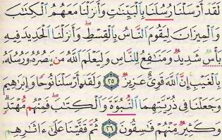

Au nom d’Allah le Clément, le Miséricordieux, Louanges à Allah.
Le saint Qur'ân
A/ Le saint Qur'ân est la parole de Dieu révélée à notre prophète,  , et c’est le livre éternel de Dieu avec lequel Dieu a terminé les révélations ainsi qu’avec le prophète Mouhammad,
, et c’est le livre éternel de Dieu avec lequel Dieu a terminé les révélations ainsi qu’avec le prophète Mouhammad,  , le dernier des prophètes.
, le dernier des prophètes.
« Lis, au nom de ton Seigneur qui a créé, qui a créé l'homme d'une adhérence. Lis ! Ton Seigneur est le Très Noble, qui a enseigné par la plume [le calame], a enseigné à l'homme ce qu'il ne savait pas. »
La révélation a duré 23 ans dont 13 à la Mecque et 10 à Médine.
La révélation du Qur'âne au Prophète  s’est faite progressivement durant 23 années. A ce propos le Très Haut a dit :
s’est faite progressivement durant 23 années. A ce propos le Très Haut a dit :
« (Nous avons fait descendre) un Qur'âne que Nous avons fragmenté, pour que tu le lises lentement aux gens. Et Nous l' avons fait descendre graduellement. »
(Qur'âne, 17 : 106).
As-Saadi (Puisse Allah lui accorder Sa miséricorde) a dit :
« Ceci signifie : nous avons révélé le Qur'âne progressivement pour distinguer la guidance de l’égarement, le vrai du faux : «pour que tu le lises lentement aux gens » signifie doucement pour leur permettre de le méditer, de réfléchir sur son sens et d’en tirer des connaissances et : «Nous l' avons fait descendre graduellement » c’est-à-dire petit à petit donc progressivement et durant 23 années. Voir Tafisir as-Saadi, p. 760. (islam q&a)
Le dernier verset a été révélé à Médine, il s’agit du verset 281 de la sourate al Baqarah :
« Et craignez le jour où vous serez ramenés vers Allah. Alors chaque âme sera pleinement rétribuée de ce qu'elle aura acquis. Et ils ne seront point lésés. »
Après cette révélation, le prophète,  , vécut neuf nuits, puis s'éteignit le lundi qui suivit les deux premières nuits de Rabi al Awwal. Dans ce verset, Dieu rappelle à Ses adorateurs que le monde et toutes les fortunes ont une fin dont les portes mèneront au Jugement dernier, après qu'aura sonné le Jour de la Résurrection. Dieu rappelle tout cela dans l'attente que nous agissions selon Ses prescriptions.
, vécut neuf nuits, puis s'éteignit le lundi qui suivit les deux premières nuits de Rabi al Awwal. Dans ce verset, Dieu rappelle à Ses adorateurs que le monde et toutes les fortunes ont une fin dont les portes mèneront au Jugement dernier, après qu'aura sonné le Jour de la Résurrection. Dieu rappelle tout cela dans l'attente que nous agissions selon Ses prescriptions.
C/Les Mecquois et les Médinois.
Ce qui a été révélé avant l’hégire – « hijra »- du prophète,  est considéré comme Mecquois et tout ce qui a été révélé après l’hégire est considéré comme Médinois peut importe où il a été révélé. Par exemple, le verset 3 de la sourate Al Maïda suivant :
est considéré comme Mecquois et tout ce qui a été révélé après l’hégire est considéré comme Médinois peut importe où il a été révélé. Par exemple, le verset 3 de la sourate Al Maïda suivant :
« Vous sont interdits la bête trouvée morte, le sang, la chair de porc, ce sur quoi on a invoqué un autre nom que celui d'Allah, la bête étouffée, la bête assommée ou morte d'une chute ou morte d'un coup de corne, et celle qu'une bête féroce a dévorée - sauf celle que vous égorgez avant qu'elle ne soit morte -. (Vous sont interdits aussi la bête) qu'on a immolée sur les pierres dressées, ainsi que de procéder au partage par tirage au sort au moyen de flèches. Car cela est perversité. Aujourd'hui, les mécréants désespèrent (de vous détourner) de votre religion : ne les craignez donc pas et craignez-Moi. Aujourd'hui, J'ai parachevé pour vous votre religion, et accompli sur vous Mon bienfait. Et J'agrée l'Islam comme religion pour vous. Si quelqu'un est contraint par la faim, sans inclination vers le péché... alors, Allah est Pardonneur et Miséricordieux. » est un verset Médinois bien qu’il ait été révélé à la Mecque, le jour d’Arafat lors du dernier pèlerinage du prophète,  , connu sous le nom de « Hajjat al wada’ ».
, connu sous le nom de « Hajjat al wada’ ».
D/ Comment a t- il été écrit ?
Le prophète,  avait des scribes/copistes pour noter la révélation dont Ali ben Abi Talib, Othman Ben Affan, Zayd Ben Thabit, Oubay ben Ka’b et Abdullah Ben Massoud. Quand un verset était révélé, le prophète,
avait des scribes/copistes pour noter la révélation dont Ali ben Abi Talib, Othman Ben Affan, Zayd Ben Thabit, Oubay ben Ka’b et Abdullah Ben Massoud. Quand un verset était révélé, le prophète,  , leur demandait de le mettre dans la sourate où se trouve ceci et cela.
, leur demandait de le mettre dans la sourate où se trouve ceci et cela.
En effet Othman a dit :
« Le Messager d’Allah,  , recevait par révélation une sourate composée de nombreux versets – Quand des versets lui étaient révélés, il appelait un scribe et disait : mets ces versets dans la sourate où l’on mentionne telle ou telle chose… Et le prophète,
, recevait par révélation une sourate composée de nombreux versets – Quand des versets lui étaient révélés, il appelait un scribe et disait : mets ces versets dans la sourate où l’on mentionne telle ou telle chose… Et le prophète,  , est mort alors que le Qur'ân était mémorisé et écrit dans la forme que nous connaissons aujourd’hui.
, est mort alors que le Qur'ân était mémorisé et écrit dans la forme que nous connaissons aujourd’hui.
Le prophète,  ne l’a cependant pas rassemblé dans un volume et cela pour les raisons suivantes :
ne l’a cependant pas rassemblé dans un volume et cela pour les raisons suivantes :
1/ La période entre le dernier verset et la mort du prophète,  fut très brève.
fut très brève.
2/ Pour la continuité (on ne savait pas si la révélation était finie jusqu’à ce que le prophète,  rejoigne l’autre monde) et parce que la révélation n’est pas descendue dans l’ordre de l’écrit puisqu’il y a des sourates qui ont été révélées à la fin de la révélation alors qu’elles font parti des premiers chapitres, comme la sourate « al Baqarah » tandis que certaines sourates ont été révélées au début de la révélation, mais font parti des derniers chapitres comme la sourate « al Alaq ».
rejoigne l’autre monde) et parce que la révélation n’est pas descendue dans l’ordre de l’écrit puisqu’il y a des sourates qui ont été révélées à la fin de la révélation alors qu’elles font parti des premiers chapitres, comme la sourate « al Baqarah » tandis que certaines sourates ont été révélées au début de la révélation, mais font parti des derniers chapitres comme la sourate « al Alaq ».
E/ L’assemblage d’Abû Bakr.
Quand il est devenu Caliphe, Abû Bakr a ordonné à Zaid Ibn Thabit de rassembler tous les supports où étaient écrit le Qur'ân dans un seul volume. Ce volume a été déposé chez Abû Bakr jusqu’à sa mort, puis chez Omar et puis chez Hafsa, « Oum al mouminin ».
Et la raison directe qui a poussé Abû Bakr à faire cela a été la mort de plusieurs compagnons ayant mémorisé le Qur'ân pendant les guerres et cela a été remarqué au début par Omar deux ans après la mort du prophète,  .
.
Al-Boukhari a cité ce Hadith dans sonSahih, (4986) :
« Zayd ibn Thabit (P.A.a) a dit :
« Abou Bakr me convoqua à la suite du massacre de Yamama et j’eux la surprise de trouver Omar à ses côtés et il me dit : Omar vient de me dire ceci : « Une tuerie eut lieu à Yamama au sein des lecteurs du Qur'âne. Et je crains que si ceux-ci continuent de se faire tuer sur les champs de bataille, une bonne partie du Qur'âne risque de se perdre. C’est pourquoi je pense que tu devrais faire rassembler le Qur'âne ». J’ai dit à Omar : « Comment vas-tu faire quelque chose que le Messager d’Allah ( ) n’a pas fait ? »
) n’a pas fait ? »
- Omar dit : "Au nom d’Allah, c’est mieux ». Et puis il n’a cessé de me répéter son idée jusqu’à ce qu’Allah m’ait inspiré son admission. »
Zayd dit : « Puis Abou Bakr poursuivit : tu es jeune, raisonnable et au-dessus du soupçon. En plus, tu écrivais du vivant du Prophète ( ) la révélation qu’il recevait. Va collecter et rassembler les (différents éléments du Qur'âne)…
) la révélation qu’il recevait. Va collecter et rassembler les (différents éléments du Qur'âne)…
Zayd dit : « Au nom d’Allah, s’ils m’avaient chargé de déplacer une montagne, j’aurais trouvé cela plus facile que l’exécution de l’ordre de rassembler le Qur'âne qu’ils venaient de me donner.
Et j’ai dit : comment allez-vous faire quelque chose que le Messager d’Allah ( ) n’avait pas fait ?
) n’avait pas fait ?
Il (Abou Bakr)a dit : « Au nom d’Allah, c’est mieux. ».
Et puis il ne cessa de me répéter son idée jusqu’à ce qu’Allah m’en inspirât l’admission comme Il l’avait fait pour Abou Bakr et pour Omar (P.A.a). Dès lors, je me suis mis à rechercher et à collecter les éléments Qur'âniques transcrits sur des branches de dattier et sur des pierres lisses ou conservées dans la mémoire des gens et j’ai trouvé les derniers versets de la sourate at-Tawba chez Abou Khouzayma al-Ansari et je ne les ai trouvés chez personne d’autre… Les feuilles contenant le Qur'âne furent conservés par Abou Bakr jusqu’à sa mort puis elles furent déposées auprès d’Omar qui les garda jusqu’à sa mort puis elles furent transférées à sa fille Hafsa  .
.
F/ Le rassemblage et le copiage d’Othman.
Quand Othman est devenu Calife, il a nommé un comité et leur a demandé de copier plusieurs « moussaf » (copie du saint Qur'ân) et il les a fait distribuer un peu partout dans les régions islamiques pour être utilisés par tous lecteurs/mémorisateurs et tous écrivains/copieurs. Et c’est comme cela que le Qur'ân a été distribué dans tous les coins du monde.
Ce comité était formé de : Zaid Ben Thabit, Abdullah Ben Azzubair, Said Ben Al Ass, Abdul Rahman Ben Harith ben Hicham. Le premier était un Ansari, les trois autres des Qorayshites.
Pourquoi cette décision ?
A l’époque, les Compagnons s’étaient dispersés dans les pays et chacun récitait le Qur'âne selon l’une des sept lectures entendues du Messager d’Allah  et leurs disciples à leurtour récitaient selon ce que chacun d’eux avait entendu de son maître.
et leurs disciples à leurtour récitaient selon ce que chacun d’eux avait entendu de son maître.
Quand un disciple entendait un autre disciple réciter le Qur'âne selon une lecture différente que celle qu’il connaissait, il le dénonçait jugeant sa lecture erronée. Ceci s’amplifia de sorte que certains Compagnons craignirent qu’il y eût des troubles au sein des générations qui allaient leur succéder. Et ils pensèrent qu’il fallait ramener tout le monde à employer une lecture conforme au dialecte des Quraychites selon laquelle le Qur'âne fut révélé afin de mettre fin définitivement aux divergences. Et ils consultèrent Othman ( ) et il accepta leur idée.
) et il accepta leur idée.
G/La différence entre le « moussaf » d’Abû Bakr et celui d’Othman.
Plusieurs différences entre l’action d’Abû Bakr  et celle d’Othman
et celle d’Othman .
.
Dont les deux plus important sont :
1 Ce qui a poussé Abû Bakr à agir ainsi a été la mort de certains compagnons mémorisant le saint Qur'ân et la crainte de perdre une partie du Qur'ân.
à agir ainsi a été la mort de certains compagnons mémorisant le saint Qur'ân et la crainte de perdre une partie du Qur'ân.
Tandis que la raison qui a poussé Othman a été la peur qu’avec la présence de différentes lectures, le Qur'ân soit lu d’une façon autre que celle qui a été révélée au prophète,
a été la peur qu’avec la présence de différentes lectures, le Qur'ân soit lu d’une façon autre que celle qui a été révélée au prophète, . (Ce qui pourrait en changer le sens)
. (Ce qui pourrait en changer le sens)
2 Le premier était un assemblage des différents supports où avait été rédigés les versets du Qur'ân et trouvés chez les compagnons pour les conserver dans un seul volume. Tandis que pour Othman, c’était le recopiage de ce qui avait été rassemblée par Abû Bakr. (d’après Kitab al 3aqidat al islamiyah ; 2e année de Sharia en Syrie ; page 37/38)
H/Les lois de sa lecture.
Le Qur'ân a été mémorisé, noté, et lus dans les prières par tous les musulmans de la même manière. Le Qur'ân a été révélé à la manière dite « tartil »:
« Et récite le Qur'âne, lentement et clairement. ».
(wa rattil al qo'ran tartilla)
Le « tartil » est la meilleure manière de réciter, il s’agit de savoir réciter le saint Qur'ân à la façon du prophète, en sortant bien les lettres et en méditant sur leur sens, donc pas trop vite, il existe une autre manière « tarqiq » ou intermédiaire et une appelée « haddar » où l’on récite vite. Djibrîl avait révélé le Qur'ân de Dieu au prophète,  , et le prophète le répétait plusieurs fois par peur de l’oublier jusqu'à ce que les versets 16 à 18 de la sourate Al Qyama descendent :
, et le prophète le répétait plusieurs fois par peur de l’oublier jusqu'à ce que les versets 16 à 18 de la sourate Al Qyama descendent :
« Ne remue pas ta langue pour hâter sa récitation : Son rassemblement (dans ton cœur et sa fixation dans ta mémoire) Nous incombent, ainsi que la façon de le réciter. Quand donc Nous le récitons, suis sa récitation. »
Puis, les musulmans l’ont transmis comme ils l’ont appris du Messager d’Allah, puis ils en ont tiré les lois du « tadjwid » puis ils les ont notées. Et cette science ne peut être apprise que de bouche à oreille.
Les musulmans de nos jours, malgré les différents accents arabes et les différentes langues nationales récitent tous le Qur'ân de la même façon.
I/Les sept lettres.
Le Qur'âne fut révélé selon sept lettres (lectures) selon un Hadith authentique rapporté du Prophète  par Omar Ibn al-Khattab (P.A.a) (cité par al-Boukhari, 2287 et par Mouslim, 818). Les sept lettres (lectures) sont les dialectes utilisés par les arabes réputés éloquents.
par Omar Ibn al-Khattab (P.A.a) (cité par al-Boukhari, 2287 et par Mouslim, 818). Les sept lettres (lectures) sont les dialectes utilisés par les arabes réputés éloquents.
Donc, le Qur'ân a été lu, écrit, mémorisé, et gardé pendant les jours du prophète et ses compagnons et il n’a pas été modifié comme l’ont été les livres antérieurs.
Dieu a dit qu’Il préserverait son Livre :
«En vérité c’est Nous qui avons fait descendre le Qur'âne,et c’est Nous qui en sommes gardien. »
Qur'âne, 15 : 9.
Il faut savoir également que c’est Ali qui durant son Califat a demandé à ce que les lettres soit « voyellisées ». Et c’est durant le Caliphe d’Abdul Malek Ibn Marwan que l’on a continué à « voyellisées » et à rajouter des points diacritiques, afin que tout le monde surtout les non arabophones puissent arriver à lire le Qur'ân correctement.
De nos jours, on rajoute des couleurs pour respecter les règles de tajwid:

Que la paix et les bénédictions d'Allah soient sur le prophète Mohammad, celui qui a tenu sa promesse, le confident. Ô Allah nous ne savons que ce que Tu nous as appris, c’est Toi qui détiens la science. Ô Allah apprend nous ce qui nous apportera du bien et fais nous profiter du bien de ce que Tu nous as appris et augmente nos connaissances. Et embelli le bien à nos yeux et aide nous à le suivre. Et enlaidi le mal à nos yeux et aide nous à nous en détourner. Et mets nous parmi ceux qui écoutent la parole et suivent les meilleures d’entre elles. Et fais de nous tes bons adorateurs par Ta miséricorde.
Gloire à Toi Seigneur, que Tes louanges soient célébrées, j'atteste qu'il n'y a de divinité que Toi, j'implore Ton pardon et je reviens vers Toi repentante.